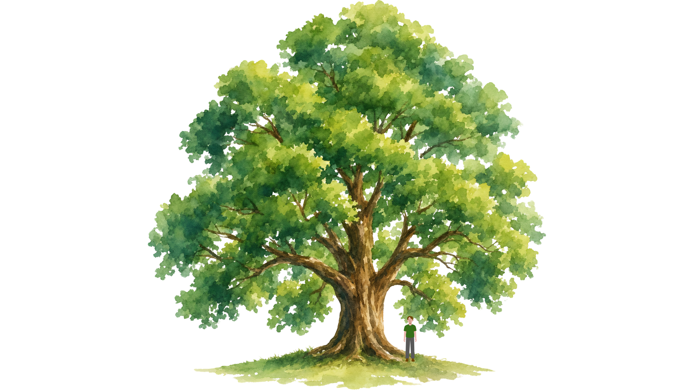
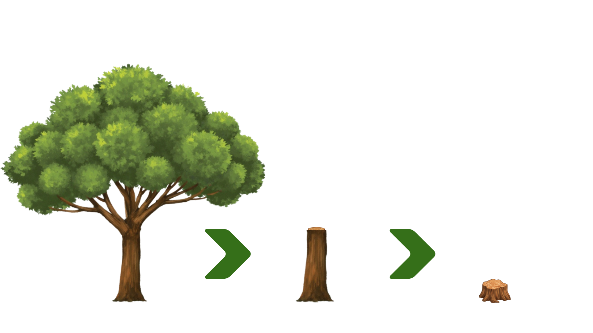

Advanced Tree Work is the work goes beyond the basics of climbing, pruning, and felling. This may be because it involves, more skill, knowledge effort, or it has a higher impact on the tree. It may also be Advanced Tree Work where there are more risks involved. We cannot provide an outline that guarantees what specifically qualifies as advanced tree work, however, after viewing your site we will be able to tell you if it qualifies as advanced tree work in your quote. As a general guidline working on larger trees, and sectionally felling trees tends to be advanced tree work.

Large trees both require larger pruning cuts and can handle less pruning, this requires more attention to detail, knowledge and skill to avoid harming the tree.

Sectionally Felling trees requires more skills than just pruning or felling, especially since there tends to be a target to avoid beneath the tree.